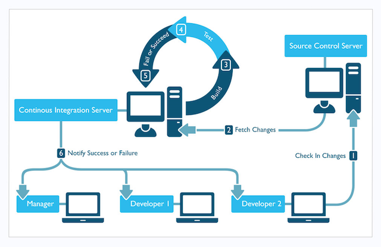
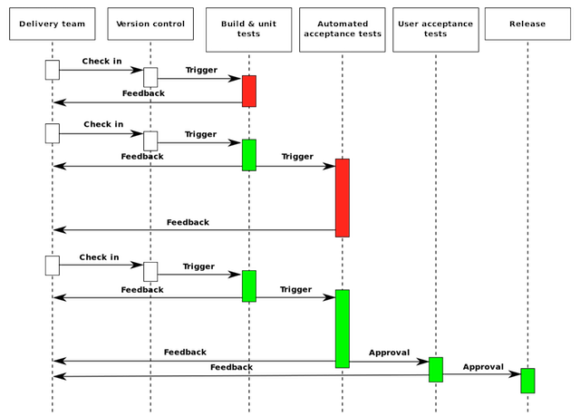
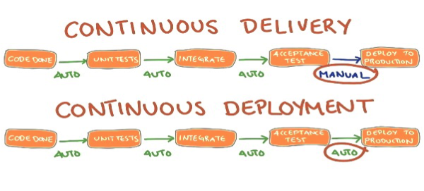

Continuous Integration 持续集成
在团队开发中,每天开发人员可能会多次向公共代码仓库提交代码,那么每天可能会产生多次merge。
持续集成(CI)是每当团队成员向版本控制提交更改时自动构建和测试代码的过程。开发人员在完成每一个小任务后，通过将更改合并到共享版本控制存储库中共享代码并进行单元测试,提交代码时会触发自动build系统。
在每一次代码合并前确保对代码进行自动测试autotest,编译build等步骤,并只有通过之后才能进行合并,如果不进行测试,而贸然提交代码,那么很难保证merge之后的主线代码的正确性。
CI的主分支的不提交代码。团队可以利用Git等版本控制系统来创建短期的功能分支，来隔离团队成员的工作。当功能实现时，开发人员提交一个“pull request”，并在批准pull request后，将更改合并到主分支中。然后开发人员可以删除以前的特性分支。
确保每个提交到主分支的提交都会触发自动build和test过程。以这种方式实现CI可以确保在开发周期中更早地捕捉到bug，从而降低修复成本。每次build都运行自动化测试，以确保代码质量。
CI能够保证开发进行的正确性,因为当你提交未经过测试的代码,出错的可能性会很大。

常用的集成开发工具
jenkins
Gitlab CI
Continuous Delivery 持续交付
持续交付(Continuous delivery, CD)是一种软件工程方法，在这种方法中，团队在短周期内生产软件，确保软件可以在任何时候可靠地发布。它的目标是以更快的速度和频率构建、测试和发布软件。通过允许对生产中的应用程序进行更多增量更新，这种方法有助于降低交付更改的成本、时间和风险。一个简单且可重复的部署过程对于持续交付非常重要。

持续交付有时与持续部署混淆。有些人甚至把这两个词互换使用。区别在于，在持续部署下，我们将通过一系列测试的任何更改部署到生产中。相反，在持续交付的情况下，我们确保软件可以在任何时候可靠地发布，但何时发布由人决定，通常是基于业务原因。为了进行持续的部署，必须进行持续的交付。
